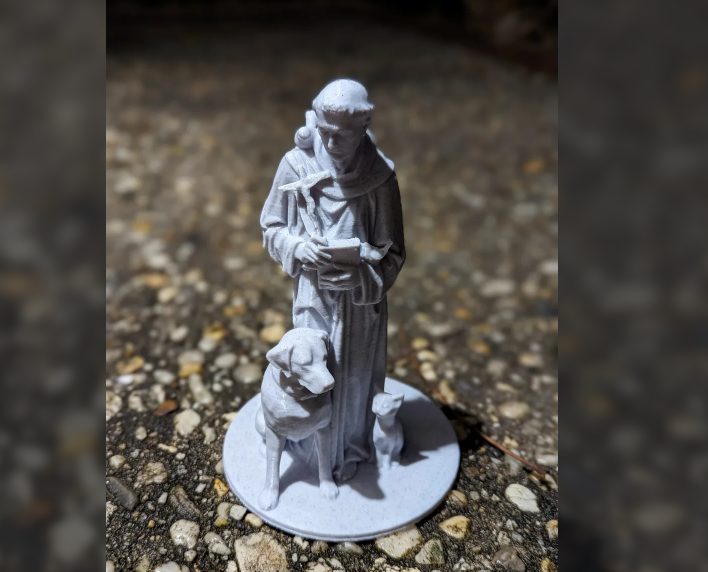

Amor por los Animales
Representa el cuidado de las criaturas fieles que acompañan nuestras vidas y hogares.
DiegoStore: “Del archivo digital a tus manos: arte 3D entregado con devoción y detalle en todo el Perú”

Fabricación a pedido✧ DIEGOSTORE · COLECCIÓN SACRA 3D
Una pieza de impresión 3D de alta definición, hecha a pedido para acompañar tu hogar con serenidad, cuidado y detalle artesanal.
Cotización según altura y tiempo de impresiónPara consultar el precio, haz clic aquí y conversemos por WhatsApp.INSPIRACIÓN ESPIRITUAL Y ESTÉTICA
Esta escultura de DiegoStore conmemora la serenidad y la caridad universal de San Francisco de Asís, patrono de los animales, la naturaleza y la paz interior. Cada pliegue de su hábito franciscano ha sido modelado para evocar sencillez y recogimiento espiritual.
En su pecho sostiene con respeto la santa cruz y la palabra divina, mientras a sus pies reposan sus dos fieles compañeros: un perro leal que alza la mirada con nobleza y un pequeño gato que busca cobijo junto a la orilla de su manto.
Una pieza que transmite consuelo y bendición para el hogar, ideal para ubicar en un altar familiar, en una repisa de oración o como un obsequio significativo para los devotos y amantes de los animales.
Representa el cuidado de las criaturas fieles que acompañan nuestras vidas y hogares.
Su presencia aporta armonía visual y serenidad a cualquier espacio íntimo o sala de estar.
Superficie uniforme, lista para ser admirada desde el primer día.
PROCESO FÁCIL Y RÁPIDO
Sin registros complicados ni carritos tediosos. Solo tres pasos directos.
Selecciona arriba la altura que mejor se acomode a tu espacio y tu color favorito.
Haz clic en el botón de WhatsApp. Se abrirá un mensaje con el detalle exacto de tu pieza seleccionada.
DiegoStore te confirma el tiempo de impresión, resuelve tus dudas y coordina el envío a tu puerta o agencia.
PREGUNTAS FRECUENTES
Cada escultura se fabrica a pedido. El tiempo depende de la altura elegida y de las horas de impresión; te confirmaremos el plazo estimado antes de iniciar y coordinaremos contigo la entrega.
La preparamos con embalaje acolchado y protección para reducir movimientos durante el traslado. Enviamos mediante agencias como Shalom u Olva Courier y compartimos los datos de seguimiento cuando el paquete esté en camino.
Las formas de pago y la posibilidad de coordinar una entrega en Lima se conversan directamente antes de confirmar el pedido. Aceptamos Yape, Plin y transferencia bancaria.
La pieza se imprime en filamento PLA+ o resina, según disponibilidad y coordinación. Es adecuada para exhibición en interiores; límpiala suavemente con un paño seco o ligeramente húmedo y evita golpes, calor directo y productos abrasivos.
DIEGOSTORE · PIEZAS CON DEVOCIÓN
Cuéntanos qué altura y color tienes en mente. Te responderemos personalmente.